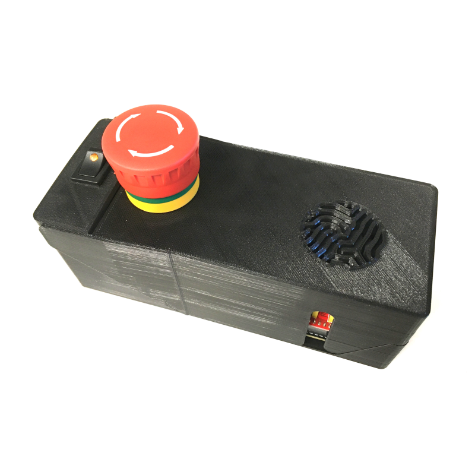
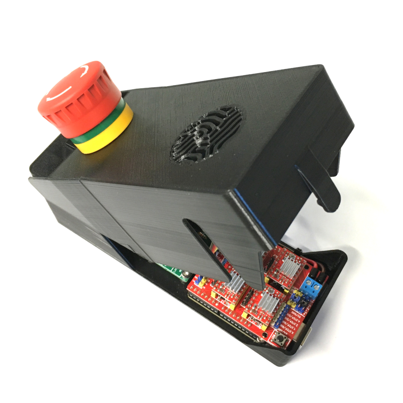
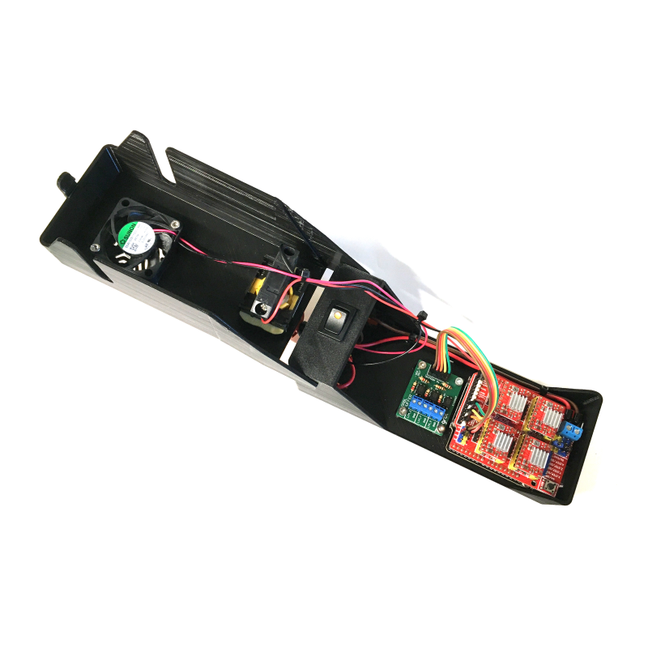
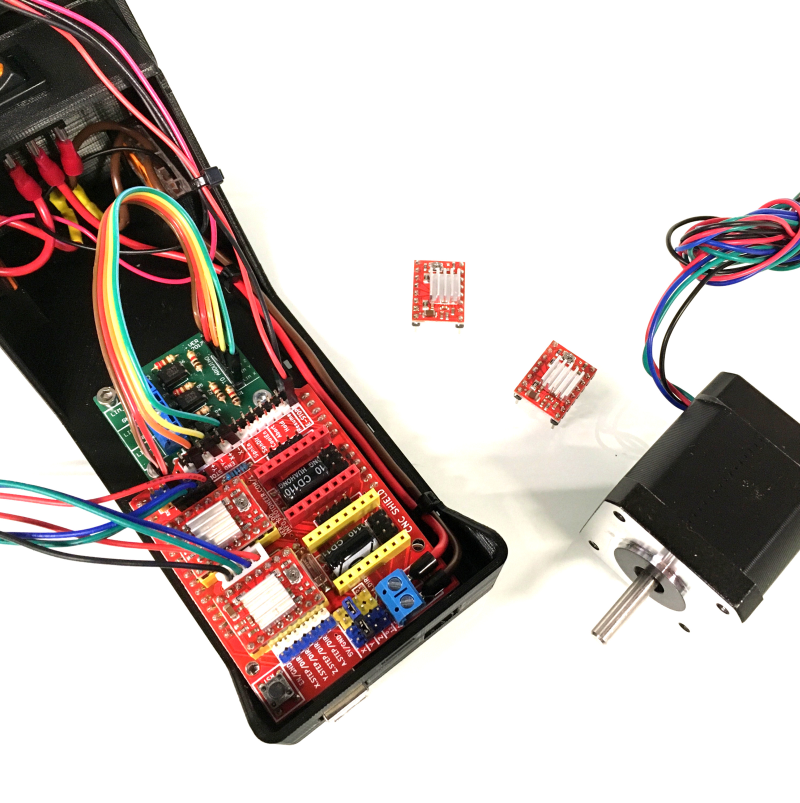

Introduction
This is a tutorial on how to make a flap case for a CNC shield compatible with an Arduino Uno board. Advantages of this flap case for a CNC shield include:
- A switch button with an LED to indicate the power status of the CNC shield and allow for easy ON/OFF control.
- A kill switch for emergency situations with the stepper motors.
- Easy access to the CNC shield for plugging and unplugging of stepper motors and limit switches, thanks to the flap design.
Content
Here is the bill of materials (csv) page.
And here are the main steps to follow:
A few explanations about the design


As shown in the images, the flap case is designed for easy plugging and unplugging of the stepper motors. The switch button with an LED helps to quickly and safely control the power status of the CNC shield.
Additionally, the flap case offers practicality and a touch of personal flair for those using CNC shields with multiple devices in various locations.
The fan grill on the flap case is a Turing pattern, reference to the Turing Center for Living Systems, inspired by Alan Turing's work.